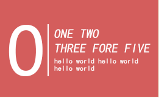

ABOUT
TECHNOLOGE
TECHNOLOGE
About technologe about technologe
about technologe
about technologe
700
3.2
css
csscsscsscsscsscss
What
前端对于网站来说，通常是指，网站的前台部分包括网站的表现层和结构层。因此前端技术一般分为前端设计和前端开发，前端设计一般可以理解为网站的视觉设计，前端开发则是网站的前台代码实现，包括基本的HTML和CSS以及JavaScript/ajax，现在最新的高级版本HTML5、CSS3，以及SVG等。
When
前端的开发中，在页面的布局时， HTML将元素进行定义，CSS对展示的元素进行定位，再通过JavaScript实现相应的效果和交互。虽然表面看起来很简单，但这里面需要掌握的东西绝对不会少。在进行开发前，需要对这些概念弄清楚、弄明白，这样在开发的过程中才会得心应手。
How
级联样式表（Cascading Style Sheet）简称“CSS”，通常又称为“风格样式表（Style Sheet）”，它是用来进行网页风格设计的。
What------40%
When------30%
How ------30%
When------30%
How ------30%
THE
TECHNOLOGE OF FRONT
前端技术领域
HTML指的是超文本标记语言 (Hyper Text Markup Language)，这个也是我们网页最常用普通的语言了，经历了多个版本的发展，已经发展到5.0版了，得力于W3C建立的标准和规范，已普遍升级到了XHTML，XHTML 指可扩展超文本标签语言（EXtensible HyperText Markup Language）， XHTML 于2000年的1月26日成为 W3C 标准，是更严格 更纯净的 HTML 代码，XHTML 的目标是取代 HTML。XHTML 与 HTML 4.01 几乎是相同的，XHTML 是作为一种 XML 应用被重新定义的 HTML，是一个 W3C 标准。W3C 将 XHTML 定义为最新的HTML版本。所有新的浏览器都支持 XHTML。这个也是我们网页最常用普通的语言了，经历了多个版本的发展，已经发展到5.0版了，得力于W3C建立的标准和规范，已普遍升级到了XHTML，XHTML 指可扩展超文本标签语言（EXtensible HyperText Markup Language）， XHTML 于2000年的1月26日成为 W3C 标准，是更严格更纯净的 HTML 代码，XHTML 的目标是取代 HTML。XHTML 与 HTML 4.01 几乎是相同的，XHTML 是作为一种 XML 应用被重新定义的 HTML，是一个 W3C 标准。W3C 将 XHTML 定义为最新的HTML版本。所有新的浏览器都支持 XHTML。这个也是我们网页最常用普通的语言了，经历了多个版本的发展，已经发展到5.0版了，得力于W3C建立的标准和规范，已普遍升级到了XHTML，XHTML 指可扩展超文本标签语言（EXtensible HyperText Markup Language）， XHTML 于2000年的1月26日成为 W3C 标准，是更严格更纯净的 HTML 代码，XHTML 的目标是取代 HTML。XHTML 与 HTML 4.01 几乎是相同的.
前端技术领域
HTML指的是超文本标记语言 (Hyper Text Markup Language)，这个也是我们网页最常用普通的语言了，经历了多个版本的发展，已经发展到5.0版了，得力于W3C建立的标准和规范，已普遍升级到了XHTML，XHTML 指可扩展超文本标签语言（EXtensible HyperText Markup Language）， XHTML 于2000年的1月26日成为 W3C 标准，是更严格 更纯净的 HTML 代码，XHTML 的目标是取代 HTML。XHTML 与 HTML 4.01 几乎是相同的，XHTML 是作为一种 XML 应用被重新定义的 HTML，是一个 W3C 标准。W3C 将 XHTML 定义为最新的HTML版本。所有新的浏览器都支持 XHTML。这个也是我们网页最常用普通的语言了，经历了多个版本的发展，已经发展到5.0版了，得力于W3C建立的标准和规范，已普遍升级到了XHTML，XHTML 指可扩展超文本标签语言（EXtensible HyperText Markup Language）， XHTML 于2000年的1月26日成为 W3C 标准，是更严格更纯净的 HTML 代码，XHTML 的目标是取代 HTML。XHTML 与 HTML 4.01 几乎是相同的，XHTML 是作为一种 XML 应用被重新定义的 HTML，是一个 W3C 标准。W3C 将 XHTML 定义为最新的HTML版本。所有新的浏览器都支持 XHTML。这个也是我们网页最常用普通的语言了，经历了多个版本的发展，已经发展到5.0版了，得力于W3C建立的标准和规范，已普遍升级到了XHTML，XHTML 指可扩展超文本标签语言（EXtensible HyperText Markup Language）， XHTML 于2000年的1月26日成为 W3C 标准，是更严格更纯净的 HTML 代码，XHTML 的目标是取代 HTML。XHTML 与 HTML 4.01 几乎是相同的.
前端技术前端技术前端技术
超文本标记语............................HTML
级联样式表...............................CSS
面向对象的动态类型的客户端脚本语言.......JS

如果想让链接字未点击时是蓝色的，当鼠标移上去后字变成红色的且有下划线，这就是一种风格。通过设立样式表，可以统一地控制HTML中各标志的显示属性。级联样式表可以使人更能有效地控制网页外观。